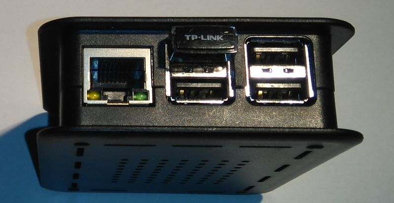
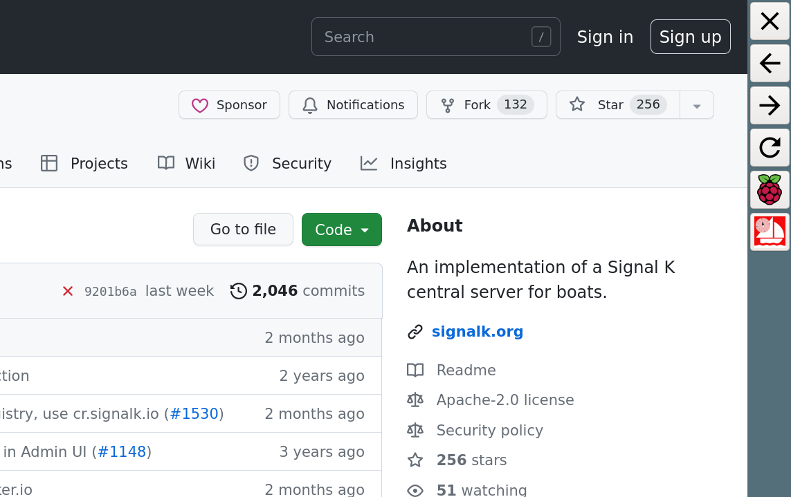
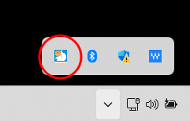
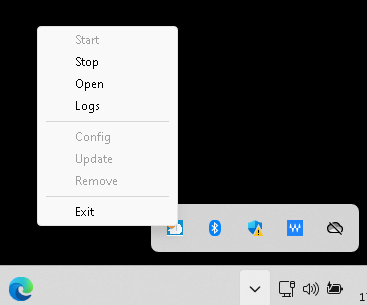
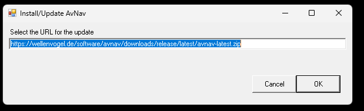
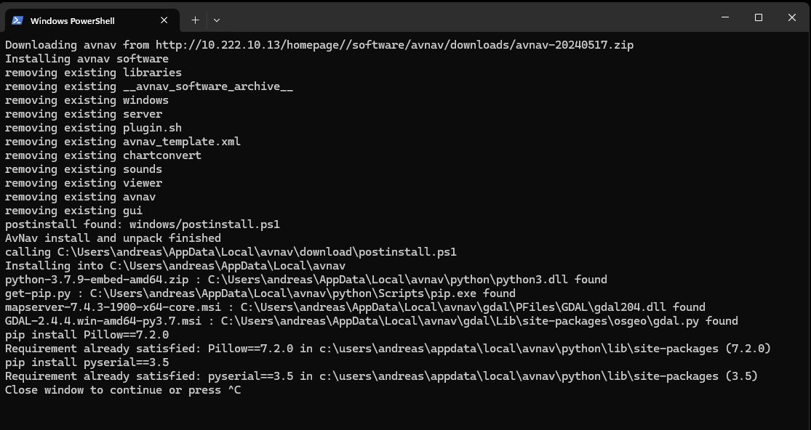

Eine Beschreibung der Versionen und Links zu den Downloads finden sich im Release Dokument.
Für Eilige ist hier der Link zum aktuellen Image, zu den Entwickler-Versionen und zu den Release-Downloads.
Um den Start zu vereinfachen, gibt es fertige Images für den Raspberry Pi. Ab Version 20220421 unterstützen die Images sowohl den sogenannten "headless" Betrieb - d.h. es ist weder Tastatur noch Monitor am Pi angeschlossen als auch einen Betrieb mit einem angeschlossener (Touch-) Bildschirm (gerne auch optional Tastatur und Maus).
AvNav ist von der Bedienung für Touch Geräte optimiert - aber man kann es natürlich auch mit Bildschirm, Tastatur und Maus bedienen.
Wie man die Images nutzt, hängt also vom Anwendungsfall ab. Im "headless" Betrieb wird der Raspberry nur als Server eingesetzt, die Anzeige erfolgt dann z.B. auf Mobilgeräten. Für diesen Fall reicht ein Raspberry Pi 3B(+). Wenn ein Monitor und Peripherie wie Tastatur und Maus direkt an den Raspberry angeschlossen werden, sollte man einen Pi4 mit mindestens 2GB Speicher wählen.
Wenn man ein komplettes Desktop System mit vielen weiteren Anwendungen haben möchte, kann die OpenPlotter-Variante eine gute Basis sein. Dafür empfiehlt sich ein Pi4 mit 4GB Speicher. Auch 2GB Arbeitsspeicher wird ausreichen - dann bleibt aber nicht viel Raum für zukünftige Anforderungen.
Die früher vorhandenen speziellen AvNav Touch images werden leider nicht mehr weiter gepflegt.
Diese Images werden von BlackSea gepflegt (vielen Dank...). Eine Beschreibung findet sich auf seiner Webseite.
Unter Windows/Linux/OSx lädt man das Image von free-x herunter und transferiert es wie unter http://www.raspberrypi.org/downloads (raw images) beschrieben auf eine SD Karte.
Diese Images enthalten
neu ab Version "20210322", erweitert ab Version "20220421"
Bevor die fertig vorbereitete SD-Karte im Raspberry verwendet wird,
sollte man einige Einstellungen anpassen. Das gilt vor allem für
Passworte:
Die Images haben eine Konfigurationsdatei "avnav.conf". Sie findet sich in
der ersten Partition der SD-Karte (Boot-Partition). Diese Datei kann mit
einem Texteditor angepasst werden.
Dort kann auch eingestellt werden, ob ein lokaler Bildschirm genutzt
werden soll ("Touch Variante")
Einfacher geht es mit einer kleinen Web-Oberfläche hier.
Die Bedeutung der Felder:
| Name | Default | Beschreibung |
| Wifi SSID | avnav | Der Name des WLAN-Netzwerks, das der Raspberry erzeugen soll. Die Images sind so vorbereitet, dass man durch Einstecken von WLAN-Adaptern auch weitere Netzwerke erzeugen kann. Daher wird eine einstellige Nummer an den Namen angefügt. |
| Wifi Password | avnav-secret | Das Passwort für das WLAN-Netzwerk. Das sollte in jedem Falle geändert werden. Jeder, der sich mit dem WLAN verbinden kann, kann damit auch die Navigation beeinflussen! |
| User pi password | raspberry | Das ist das Passwort für den Nutzer "pi". Dieser Standard- User wird genutzt, wenn man sich per SSH verbindet oder wenn man direkt per Monitor und Tastatur auf den Raspberry zugreift. Das Passwort für den User "pi" sollte ebenfalls unbedingt geändert werden. |
| Base Board | None | Hier kann man aus unterstützten Basis-Platinen wählen.
|
| HAT | None | Hier kann man einen unterstützten Pi-HAT auswählen. AvNav wird die
entsprechenden Einträge für die Overlays in /boot/config.txt machen
und die CAN Netzwerk-Schnittstellen anlegen.
|
| Module RTL8188EU | aus | Wenn eingeschaltet, wird der Kernel-Treiber
für WLAN Adapter mit dem Chipsatz RTL8188EU per DKMS
eingerichtet. Wenn der Kernel des Systems aktualisiert wird (Kommandozeile) wird der Treiber neu übersetzt. |
| Module RTL8192EU | aus | Wenn eingeschaltet, wird der Kernel
Treiber für WLAN Adapter mit dem Chipsatz RTL8192EU per DKMS
eingerichtet. Wenn der Kernel des Systems aktualisiert wird (Kommandozeile) wird der Treiber neu übersetzt. |
| TimeZone | Europe/Berlin | Die Zeitzone, die im Image genutzt werden soll. |
| WifiCountry | Germany | Das Land (muss für den Wifi Adapter aus legalen Gründen gesetzt werden) |
| InternalWifi as Client | aus | Wenn eingeschaltet, wird der interne Wifi Adapter des Pi nicht als
Access Point definiert, sondern kann sich mit anderen Netzwerken
verbinden. Achtung: Das erfordert eine andere Möglichkeit, um auf den Pi zugreifen zu können - siehe [Verbinden mit dem Raspberry]. |
| KeyboardLayout | German | Layout für eine angeschlossene Tastatur (Kommandozeile und X) |
| KeyboardType | Generic 105-key PC(intl.) | Typ der angeschlossenen Tastatur |
| TouchSupport (ab 20220421) |
aus | Wenn eingeschaltet, startet ein X-Server mit einem Firefox Browser im Kiosk Modus. Über einen Button in AvNav kann auf einen anderen "Bildschirm" gewechselt werden, über den File Manager, Terminal u.ä. verfügbar sind. |
| Display DPI (ab 20220421) |
96 | Nur für den lokalen Bilschirm. Die dots/inch für das angeschlossene Display. Beim Klick öffnet sich ein kleiner Rechner, in dem die Abmessungen des Bildschirmes in mm und Pixel angegeben werden können, daraus wird der DPI Wert berechnet. Basierend auf diesem Wert, werden einige Anzeige-Elemente skaliert. |
| OnScreen KeyboardHeight (ab 20220421) |
7 | Die Höhe einer Tastenzeile beim angezeigten OnScreen keyboard. Bei
korrekter DPI Einstellung sollte dieser Wert ein guter Kompromiss
sein. Wenn man den Wert sehr gross wählt, bleibt u.U. bei angezeigter Tastatur nicht mehr genug Bildschirmfläche... |
| HideCursor (ab 20220421) |
an | Verbergen des Cursors auf dem lokalen Bildchschirm. Wenn mit einer Maus gearbeitet werden soll, muss dieser Schalter auf "aus" gesetzt werden. |
Nach dem Eintragen der Werte kann man durch Klick auf den "download"-Button die "avnav.conf"-Datei herunterladen. Diese muss in die erste Partition der SD-Karte gespeichert werden. Eine eventuell dort vorhandene Beispieldatei muss überschrieben werden! Diese Partition muss dazu natürlich auf dem Computer sichtbar sein. Unter Windows wird man in der Regel nur die erste Partition sehen können. [Eventuell muss man dazu nach dem Schreiben des Images die SD-Karte noch einmal enfernen und wieder einstecken.] unklarer Satz, warum muss man das?
Es empfiehlt sich daher, die "avnav.conf"-Date noch einmal an einem sicheren Platz zu speichern, um sie ggf. beim Erzeugen einer neuen SD-Karte wiederverwenden zu können.
Nun kann man die SD-Karte in den Raspberry stecken und ihn starten. Der erste Boot kann einige Zeit dauern, da das gesamte Dateisystem auf der SD-Karte erzeugt werden muss. Je nach den Einstellungen in der Konfiguration wird der Raspberry noch ein weiteres Mal neu starten.
Wenn der Raspberry seine Systemeinrichtung endgültig abgeschlossen hat, kann man sich mit ihm verbinden.
Wenn das Image für einen lokalen Bildschirm konfiguriert wurde, kann man natürlich direkt mit einem angeschlossenen Bildschirm, ggf. noch Tastatur und Maus arbeiten.
Allerdings sollte man auch diesem Falle eine der hier im Folgenden beschriebenen Verbindungen vorbereiten - die braucht man eventuell in Fehlersituationen.
Prinzipiell kann man sich auf mehrere Arten mit dem Raspberry verbinden:
Wenn man den Pi mit einem Router verbindet (z.B. im Heimnetz) dann erhält
er von diesem eine IP Adresse. Über diese Adresse kann man sich mit dem Pi
verbinden.
Da es oft mühsam ist, diese Adresse herauszufinden, macht sich der Pi im
Netz per mDNS
(Bonjour, Avahi) bekannt.
Auf diese Weise kann man sich z.B. mit einem Browser einfach zu AvNav
verbinden:
xxx ist dabei der in der Image Konfiguration gewählte Hostname.
Auch ein Zugang per SSH (unter Windows z.B. per putty)
íst auf diese Weise möglich - das Zugangs-Passwort für den Nutzer pi wurde
ja in der Image Konfiguration gesetzt.
Falls man sich mit einem Netzwerkkabel direkt z.B. mit einem Laptop
verbindet, wird der Pi nach einiger Zeit selbständig eine IP Adresse
aufsetzen. Das kann 1...2 Minuten dauern. Diese gehört zum sogenannten
Automatic Private IP Addressing Bereich 169.254.x.x. Die meisten Desktop
Systeme unterstützen das ebenfalls (unter Linux muss man es ggf. explizit
anschalten).
Wenn also der Laptop auch auf seinem Ethernet Interface eine solche
Adresse aufgesetzt hat, sollte eine Verbindung wie beschrieben per
xxxx.local funktionieren.
Falls der Zugriff über die xxx.local Adresse nicht funktionieren sollte, muss man versuchen, die IP Adresse des Pi zu ermitteln (z.B. in der Administration des heimischen Routers).
Man kann das WLAN-Netzwerk verwenden, das der Raspberry erzeugt hat. Die SSID und das Passwort wurden wie oben beschrieben in der Datei "avnav.conf" definiert (mit noch einer angehängten Nummer).
Auch hier steht man vor dem Problem, zunächst die IP-Adresse des Pi herauszufinden. Wie schon beim Ethernet Zugang beschrieben, sollte auch hier der Zugriff per mDNS funktionieren.
Falls das nicht funktioniert, kann man es mit den festen IP Adressen 192.168.30.10, 192.168.40.10, 192.168.50.10, 192.168.60.10 versuchen:
Das sollte die Hauptseite von AvNav
laden. Es sollte auch möglich seine, xxxx.local zu benutzen, wenn man sich
mit dem Raspberry per SSH verbinden will (z.B. putty
unter Windows).
Eine Einschränkung bleibt: Leider funktioniert xxx.local nicht auf
Android-Geräten. Daher empfehle ich, dort ein Tool zu nutzen, das mDNS
nutzen kann - einen
BonjourBrowser . Für IOS gibt es ein vergleichbares
Tool - auch wenn dort der Eintrag "xxx.local" im Browser
funktioniert. Man wird seinen Raspberry mit dem AvNav-Image in den
Browsern unter dem Namen "avnav-server" finden. Typischerweise wird man
noch einen zweiten Eintrag "avnav" sehen - dahinter verbirgt sich der SignalK-Server auf dem
Raspberry.
Wenn man seinen Raspberry im Bonjour-Browser sehen kann, der Aufruf der
Seite dann aber fehlschlägt, kann es an einer Besonderheit von Android
liegen, wenn zusätzlich z.B. per Mobilfunk eine Internet-Verbindung aktiv
ist. In diesem Falle sollte man mobile Daten zeitweilig abschalten.
Ab der Version 1.12 unterstützt die Android BonjourBrowser app auch SSH. Das AvNav Image (ab 20220421) macht auch seinen SSH Zugang per mDNS bekannt. Wenn man unter Android dann noch einen passenden SSh client installiert (beispielsweise JuiceSSH) kann man sich auf diese Weise auch per SSH mit dem Pi verbinden. Das ist für ein normales Arbeiten meist nicht so komfortabel - aber für den Notfall kann man so ein paar Kommandos eingeben.
Wenn man sich per SSH verbindet, ist der Nutzername "pi". Das Nutzer-Passwort wurde in der Datei "avnav.conf" (hoffentlich) gesetzt. . Wenn das in der Konfiguration gesetzte Passwort nicht funktioniert, kann
man noch einmal das Default-Passwort versuchen. Es lautet "raspberry".
Eventuell wurde die avnav.conf zuvor nicht korrekt gespeichert.
Eine Root-Shell kann man mit sudo -i erhalten.
Dazu benötigt man ein Android Gerät, das USB Tethering unterstützt (meist
bei den Verbindungseinstellungen). Nachdem man das Gerät per USB mit dem
Pi verbunden hat, muss man das USB Tethering einschalten (wird meist
automatisch wieder ausgeschaltet, wenn man die Verbindung trennt).
Neben der Möglichkeit, den Pi so mit dem Internet zu verbinden, kann man
auch auf den Pi mit dem Browser oder per SSH zugreifen. Da auch wieder die
Ermittlung der IP Adresse erfolgen muss, empfehle ich wieder die Bonjour
Browser App zu installieren - siehe unter WLAN.
Für SSH Zugriffe ebenfalls wieder JuiceSSH.
Über diesen Weg kann man auch auf den Pi zugreifen, falls z.B. das WLAN nicht funktioniert. Im BonjourBrowser wird man 2 http: Adressen finden (Port 8080 für AvNav und Port 3000 für SignalK). Dazu (ab 20220421) noch einen SSH Zugang.
Wenn man wie unten beschrieben eine WLAN Verbindung zu einem anderen Netzwerk eingerichtet hat (erfordert einen WLAN Stick oder Umschaltung des internen WLANs auf Client), kann man den Zugriff auf den Pi über dieses Netzwerk freigeben ("external access" beim Aufsetzen).
Das sollte man aber nur in einem geschützten Netzwerk tun (z.B. das Netz eines eigenen LTE Routers). Auf keinen Fall sollte man das in einem öffentlichen WLAN erlauben - der Zugriff ist nicht geschützt und prinzipiell kann jeder aus dem Netz auf den Pi zugreifen.
Wenn man mit dem client Netzwerk verbunden ist, kann man wieder wie unter WLAN beschrieben auf den Pi zugreifen.
Für einige Funktionen (z.B. update von Software) benötigt der Pi eine Internet Verbindung. Diese wird natürlich nicht für die grundlegenden Navigationsfunktionen benötigt.
Vor der Image Version 20220421 ist dabei zu beachten, das der Pi nicht
automatisch seine Zeit einstellt, wenn kein GPS angeschlossen ist. Das
kann bei vielen Internet Zugriffen zu Problemen führen.
Ab der Version 20220421 synchronisiert der Pi nach einer Wartezeit
automatisch seine Zeit mit dem Netz (ntp).
Für die Verbindung zum Internet gibt es die folgenden Möglichkeiten:
Der Pi stellt seine Internet-Verbindung grundsätzlich über sein eigenes WLAN auch verbundenen Geräten zur Verfügung.
Hier wird der Pi über ein Ethernet Kabel an einen Router angeschlossen.
Dazu ist auf dem Pi nichts weiter einzurichten, das sollte automatisch
gehen.
Auf einigen Pi3 kann es vorkommen, das ein Netzwerkkabel was erst nach dem
boot angeschlossen wird, nicht richtig erkannt wird. In diesem Falle den
Pi mit angeschlossenem Netzwerk neu starten.
Dazu wird ein weiterer WLAN Adapter (USB Adapter) benötigt. Bitte vorher die Kompatibilität mit dem Pi prüfen - z.B. hier.
Der Stick muss wie im Bild gesteck sein (auf dem Pi4 die blaue USB Buchse
an der Platinen-Seite).
Der interne Name des Netzwerk-Interfaces ist wlan-av1.

Alternativ kann in der Image-Konfiguration "InternalWifi as Client" gesetzt werden, damit wird der interne WLAN Adapter für die verbindung zu anderen Netzten verfügbar. Dann benötigt man aber einen anderen Zugriff zum Verbinden mit dem Pi da er keinen Access Point mehr aufmacht.
Man kann die Verbindung zu einem WLAN in der App
konfigurieren.
Bei jedem WLAN, mit dem man sich verbindet, kann man auswählen, ob ein
Zugriff auf den Pi von aussen möglich sein soll ("external access"). Wenn
das nicht ausgewählt ist, kann über dieses WLAN nicht auf AvNav
zugegriffen werden. Bitte die Hinweise zum
Zugriff beachten.
Wie bereits beim Zugriff beschrieben, kann
man ein Android Gerät mit USB Tethering verbinden. Intern ensteht ein
Netzwerkinterface usb0.
Darüber kann der Pi ebenfalls auf das Internet zugreifen.
Das kann eine einfache Möglichkeit sein, wenn man den Zugriff nur
temporär braucht und keinen zusätzlichen WLAN Adapter zur Verfügung hat.
Falls man vorher anders mit dem Internet verbunden war, kann es sein, das
der Pi die USb Verbindung erst nach einem Neustart wirklich nutzt
(Achtung: USB Tethering auf dem Android Gerät wieder einschalten, wird
beim Pi-Neustart normalerweise ausgeschaltet).
Der Raspberry wird ein (oder mehrere) WLAN-Netzwerke aufsetzen, eines mit dem internen Adapter und weitere mit potentiell gesteckten WLAN-Sticks. Diese Netzwerke haben die Adressen:192.168.20.0/24, 192.168.30.0/24, 192.168.40.0/24, 192.168.50.0/24. Der Raspberry selbst hat dabei jeweils die Adresse 192.168.x.10.
Auf dem Raspberry wird dazu ein DHCP-Server und ein DNS-Server eingerichtet (dnsmasqd).
Wenn der Raspberry über ein Ethernet-Kabel verbunden wird, versucht er per DHCP eine Adresse aus dem Netzwerk zu erhalten. Er setzt dann eine NAT-Weiterleitung aus seinem WLAN-Netz zum Ethernet auf. So kann z.B. eine Internetverbindung aufgebaut werden, während man in das WLAN des Raspberry eingewählt ist.
Für die meisten Aktionen sollte ein Kommandozeilen-Zugang jedoch nicht erforderlich sein. Für Updates nutzt man das bereits vorinstallierte Update-Plugin. Die Server-Konfiguration kann innerhalb der App auf der Server/Status-Seite vorgenommen werden. In früheren Versionen gab es ein eigenes AvNav Touch Image.
Dieses wird jedoch nicht mehr weiter gepflegt.
Ab der Versiion 20220421 wurde daher der Support für einen angeschlossenen
Bildschirm (mit dem Schwerpunkt touch) in die AvNav images integriert.
Wie unter Vorbereitung beschrieben, kann man
die Unterstützung für einen Bildschirm dort aktivieren.
Wenn das dort eingeschaltet wurde, startet ein service "avnav-startx".
Dieser erzeugt einen lokalen X Server, eine Nutzer-Sitzung für den Nutzer
pi mit openbox als
Fenster-Manager und Firefox im Kiosk Mode.
Als Bildschirm-Tastatur (On Screen Keyboard) wird onboard verwendet.
Auf der AvNav Hauptseite (und auf einigen anderen Seiten) wird ein
"Raspberry" Button angezeigt, mit diesem wechselt man auf einen zweiten
virtuellen Bildschirm, auf dem man einen Dateimanager, ein Terminal und
verschiedene weitere Tools findet.
Das System ist ganz bewusst nicht als ein komplettes Desktop-System
ausgelegt, um möglichst Resourcen schonend zu arbeiten.
Da man an die Systemtools nur über den Button in der AvNav app
herankommt, ist es sinnvoll, sich einen weiteren Zugang zum Pi wie weiter
oben beschrieben zuzulegen.
Damit kann man im Fehlerfall auf das System zugreifen.
Ein Restart der Nutzeroberfläche von der Kommandozeile kann mit
erfolgen.
Falls Firefox einmal nicht mehr richtig starten möchte, kann man das
Nutzerprofil entfernen. Das wird beim nächsten Start neu angelegt.
Achtung: AvNav Einstellungen, die nicht auf dem Server gespeichert
wurden, gehen dabei verloren.
Ab Version 20230614 wird auf dem Hauptbildschirm immer dann, wen AvNav nicht (oder nicht komplett) aktiv ist, ein zusätzliches Panel angezeigt.

Über diese Panel können einige Navigationsfunktionen in firefox gesteuert
werden, es kann zum 2. Bildschirm (system) gewechselt werden - und man
kann die (oben beschriebene) Reset-Funktion für das firefox Nutzerprofil
ausführen ( ).
).
Damit ist eine Bedienung des Systems auch möglich, wenn einmal AvNav nicht komplett startet. Die Reset Funktion findet sich auch auf dem System-Bildschirm (allerdings nur für komplette Neu-Installationen).
Die Paketquellen bindet man wie folgt ein. Das ist nur nötig, wenn man nicht das AvNav-Image nutzt.
Debian Buster (amd64,armhf,arm64)
Debian Bullseye (amd64,armhf,arm64)
Ubuntu Jammy (amd64)
Für die Installation auf einem Linux System muss man nach Einbindung der Paketquellen die folgenden Schritte ausführen:
kann man AvNav mit dem Benutzer "avnav" automatisch beim Systemstart aktivieren.
Ab 20240520 kann man AvNav als ein user systemd service für den eigenen Nutzer automatisch starten lassen. Um diesen Service zu aktivieren ruft man
auf. Der Service startet automatisch wenn sich der Nutzer einlogged und stoppt, wenn er sich abmeldet. Um den Service bereits beim Systemstart zu aktivieren muss man den "linger" mode für den Nutzer setzen:
Für Details siehe die systemd Dokumentation.
Um den Status zu prüfen nutzt man
AvNav nutzt das (default) Datenverzeichnis $HOME/avnav.
Um den Service wieder zu deaktivieren nutzt man
Nach dem Herunterladen kann man die Pakete auf einem raspberry pi mit
Falls man sein raspberry pi System vergleichbar zu unseren Images
aufsetzen möchte, kann man dazu noch das "avnav-raspi"-Paket installieren.
Das ändert die Netzwerk-Konfiguration so , wie AvNav das möchte, sorgt
dafür, das AvNav unter dem Nutzer "pi" startet und aktiviert das
Einstellen der Systemzeit sowie das Verwalten von WLAN client Netzwerken.
oder mittels Download von GitHub.
Hinweis: Die start/stop Funktionen im Update-Plugin funktionieren
(noch) nicht mit einem avnav, das als systemd user Service gestartet
wurde. Das ist aber kein Problem, da man AvNav auch aus der App selbst
restarten kann.
Wenn man nicht das "avnav-raspi"-Paket installiert, man aber AvNav mit einem anderen Nutzer als "avnav" - also z.B. dem Nutzer pi starten möchte, sollte man wie beschrieben den Start als systemd user Service nutzen.
Man kann dann als Nutzer "pi" AvNav einfach von der Kommandozeile starten lassen.Wenn man avnav als systemweiten Service mit einem anderen NUtzer laufen lassen möchte, kann man auch folgende Schritte abarbeiten:
Avnav als Systemdienst starten. Wenn man diese Datei nicht anlegt/kopiert, wird AvNav nicht mit den Nutzer "pi", sondern mit dem Nutzer "avnav" arbeiten.
Für OpenPlotter gibt es eine komplette Integration von AvNav (Dank an e-sailing). Im Repository https://www.free-x.de/deb4op/ , das bereits standardmäßig mit OpenPlotter 2 (und 3) kommt, sind die notwendigen Pakete bereits vorhanden. Somit kann man sie einfach installieren:
Seit 2021/03 ist AvNav offiziell in OpenPlotter verfügbar. So sollte nach einem Update von OpenPlotter "openplotter-avnav" bereits verfügbar sein.
Das Paket "avnav-raspi_xxx.deb" sollte man auf OpenPlotter nicht installieren, weil es sich nicht mit den Netzwerkeinstellungen von OpenPlotter verträgt. Innerhalb der OpenPlotter-AvNav-Konfiguration kann man den HTTP-Port für AvNav ändern, wenn es Probleme mit anderen Apps geben sollte. Die Defaultwerte sind: :8080 für den Browserzugriff, :8082 für ocharts.
Wenn man AvNav mit der OpenPlotter-App installiert, empfängt AvNav alle NMEA-Daten von SignalK und sucht nicht selbst nach USB Geräten. Alle Geräte-Konfigurationen oder Schnittstellen-Einrichtungen können so direkt in OpenPlotter und SignalK vorgenommen werden.
Für Windows gibt es einen Installer (neu ab 20240520). Die aktuelle
Version zum Download findet man hier.
Dieser Installer erzeugt eine App "avnavservice" die (als default)
automatisch startet(User autostart). Dieser Service erzeugt eine
Notifikation (Icon) die bei Klick ein Menü mit den wichtigsten Funktionen
zeigt. Dieser service enhält noch nicht die eigentliche AvNav software
(oder die notwendigen Python Pakete). Aber über das Menü können diese
installiert werden.
Für eine Deinstallation von avnavservice bitte die Systemsteuerung nutzen.


Das service Menü hat die folgenden Einträge:
| Bezeichnung | Funktion |
| Start | Startet den AvNav Server. Nur aktive, wenn die AvNav software installiert wurde und der Server noch nicht läuft. Der Service merkt sich ob AvNav gestartet wurde und wird es beim nächsten Stat automatisch wieder staerten, wenn nicht zischenzeitlich "Stop" aktiviert wurde. |
| Stop | Stoppt den AvNav Server. |
| Open | Öffnet den default Browser mit der URL für den AvNav Server. |
| Logs | Öffnet ein Explorer Fenster im AvNav log Verzeichnis
(PROFILEDIR/AvNav/logs). Dort gibt es das normale avnav.log und
zusätzlich die Ausgabe vom startup(service-err.log). Um z.B. zur AvNav XML Konfiguration zu gelangen, muss man nur im Explorer ein Verzeichnis nach oben navigieren. |
| Config | Erlaubt es, den HTTP Port für AvNav zu setzen(default: 8080). |
| Update | Diser Eintrag ist "Install" wenn die AvNav Software noch nicht
installiert wurde. Ein Installationsdialog wird geöffnet(siehe unten). |
| Remove | Entfernt die installierte AvNav Software (aber alle Nutzerdaten
unter PROFILEDIR/AvNav bleiben erhalten). Vor einer Deinstallation von avnavservice (über Systemsteuerung/Software) sollte das genutzt werden - sonst muss man später das Verzeichnis PROFILEDIR/AppData/Local/avnav per Hand entfernen. |
| Exit | Stoppt AvNav und beendet avnavservice (die Notifikation
verschwindet). Um den Service erneut zu starten, nutzt man das
Startmenü. Normalerweise kann man den Service laufen lassen. Wenn der AvNav Server gestoppt ist, werden kaum Systemresourcen verbraucht. Nur nach einer erneuten Installtion von avnavservice muss man diesen einmal stoppen und wieder starten. |
Nach Klick auf Install/Update wird ein kleiner Dialog angezeigt.

Die hier eingetragene URL zeigt auf die aktuelle AvNav software. Aber man kann hier jede URL eingeben, die auf ein aktuelles AvNav Softwarepaket zeigt (zip Datei) - z.B. von den daily oder release Seiten.Nach OK wird ein Installationsfenster angezeigt mit dem Fortschritt.

Nachdem man diese Fenster geshlossen hat, kann man den AvNav Server über "Start" im Menü wieder starten.Der avnavservice erfordert Powershell (>= 5.x) - das sollte auf allen modernen Windows Systemen verfügbar sein. Wenn die AvNav Installation auf einen Fehler läuft kann es sein, das die neuesten C/C++ Bibliotheken nicht installiert sind. Diese kann man von Microsoft herunter laden. Der direkte Link ist normalerweise hier.
Dieser neue Windows service ersetzt die alte AvNavNet installation mit einer eigenen GUI. Releases ab 20240520 sind nicht mehr kompatibel mit der alten Version. Es wird empfohlen, die alte Installation komplett zu entfernen, ehe der neue Installer genutzt wird.
Die Karten-Konvertierung ist nun ohnehin komplett in AvNav integriert und
kann so genutzt werden wie in der App Dokumentation beschrieben.
Man kann serielle Geräte, die am Windows System angeschlossen sind, ganz
normal benutzen(z.B. einen GPS Stick).
Da der AvNav Server im Hintergrund läuft, kann man ihn zum Beispiel auch als NMEA Multiplexer und Logger nutzen.